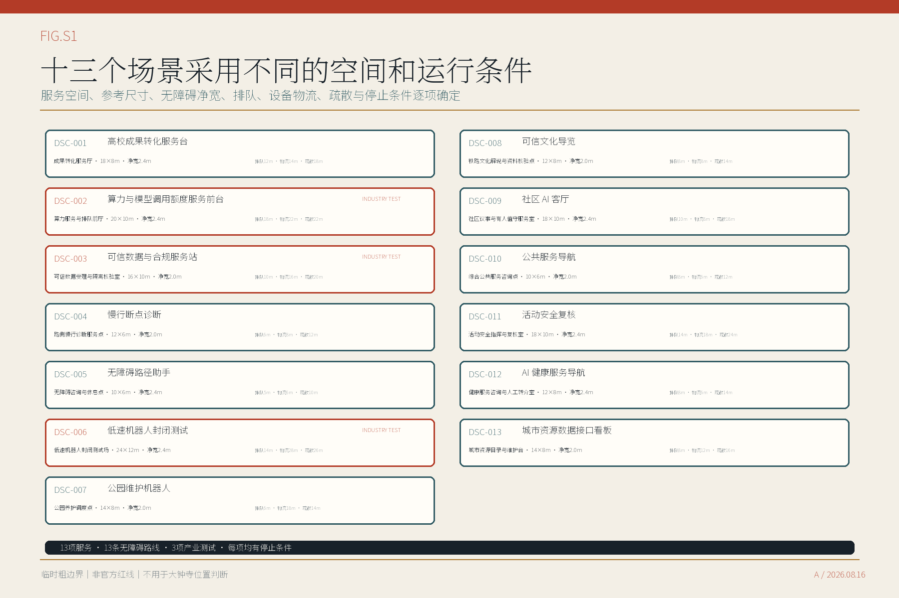

总览地图 · 三层范围
统筹研究范围用于判断产业与区域协同，总体设计范围用于组织空间结构。三处重点区域采用不同回答：众智园组织受控测试，AI原点组织成果转化与社区服务，大钟寺用非定界、非定量四象限框架组织站区步行和公共空间联系。

现状资源与更新潜力
现状清单区分公开可核背景、本轮设计资源和必须补齐的现场资料。更新采用五类筛查方法；在测绘、建筑质量、用途、权属和专业条件核实前，不给具体地块或建筑贴更新等级。

用地分区 · 建筑


六个功能建议区涵盖五类用地性质，并采用现行自然资源部分类。8个参考建筑基底用于检验首层公共开放空间、有人值守服务区、研发测试区和独立物流的关系，不代表现状建筑、法定地块或获批建设量；高度、层数和退线仍待正式资料。
重点区域

众智园与AI原点给出概念总平、参考建筑基底、公共空间和剖面。AI原点的新增服务须与现有人才服务流动站形成书面确认的共址、转介或扩展关系，不重复设置既有17项人社服务窗口。大钟寺以换乘站为中心提出非定界、非定量四象限概念，比较功能、建筑行动、交通、公共空间、运营和启动条件。该示意不进入GeoJSON，也不用于站口定位、道路红线、用地、建设量或项目范围判断。
产业生态与指标体系
AI创新指数、人才密度、产业产出、企业集聚度、产业空间规模与职住及公共服务完整度均已明确公式和启用资料。当前没有可审计数据，数值保持待核定。

交通慢行 · 蓝绿公共空间

交通线是概念关系，不是道路红线。13条无障碍路线分别说明公共排队、设备物流、疏散和运维关闭条件；图中三类参考断面用于核对公园、测试场和社区服务界面。大钟寺不设置连接线。
AI 场景
十三项服务均有明确空间位置；算力与模型调用额度服务、可信数据与合规服务、低速机器人封闭测试为三项产业测试。每项服务说明最小数据、人工责任、申诉和停止条件。

- DSC-001高校成果转化服务台成果转化服务
- DSC-002算力与模型调用额度服务前台产业测试
- DSC-003可信数据与合规服务站产业测试
- DSC-004慢行断点诊断城市诊断
- DSC-005无障碍路径助手公共服务
- DSC-006低速机器人封闭测试产业测试
- DSC-007公园维护机器人城市运营
- DSC-008可信文化导览文化服务
- DSC-009社区 AI 客厅公众参与
- DSC-010公共服务导航公共服务
- DSC-011活动安全复核城市运营
- DSC-012AI 健康服务导航公共服务
- DSC-013城市资源数据接口看板平台运营
文化展示、公共参访与运营
三处公共贡献展示点、年度公共服务计划、开放开发者工作组、双语参访路线和六步项目转化流程已经进入人读版。它们均为概念建议；大钟寺不纳入当前参访路线，国际交流须先完成内容清权、许可和主办责任确认。

更新项目
九项更新建议按“近期准备、条件成熟后扩展、大钟寺资料补齐后研究”分为三组。当前均为概念建议，须先落实责任主体、场地权利、资金、消防、市政和运营方案。

- 01公共服务节点设计导则近期准备
- 02众智园封闭测试场近期准备
- 03AI原点成果转化服务厅近期准备
- 04公共空间走廊示范段近期准备
- 05京张工程档案路线条件成熟后扩展
- 06社区AI客厅网络条件成熟后扩展
- 07城市资源数据接口条件成熟后扩展
- 08公共服务现场测试周条件成熟后扩展
- 09大钟寺站区步行与公共空间联系研究正式资料到位后研究
核心指标

视觉识别与使用规则

“京张公共服务走廊”为方案暂定名，不是官方规划名称。正式发布前仍需完成名称近似、字体和图形权利审查。
方案构成与任务覆盖 · 实施条件核对（自检状态）
来源 · 假设与深化条件
方案依据资格预审公告、项目任务书、海淀与北京相关政策、城市设计与用地分类文件、AI与数据治理法规以及六个创新区案例。当前假设只支持概念设计；正式深化仍需补齐官方边界、控规、现状测绘、权属、道路、市政、消防、文保和运营主体资料。
七项公共空间组件
- KIT-01两类入口标识待责任主体
- KIT-02有人值守服务台待责任主体
- KIT-03设备运维关闭线待责任主体
- KIT-04无障碍靠背座待责任主体
- KIT-05纸面路线架待责任主体
- KIT-06设备撤场口待责任主体
- KIT-07资料版本与更新公示栏待责任主体